15. Causal Inference: X Without PS (CRP+SB) - InvGauss/Amoroso
Source:vignettes/legacy/v15-causal-x-no-ps-SB.Rmd
v15-causal-x-no-ps-SB.RmdLegacy vignette (for the website / historical notes). These files may not match the current exported API one-to-one. Last verified: 2026-01-18.
For the up-to-date workflow, see the main package vignettes (Introduction, Model Spec, MCMC Workflow, Unconditional/Conditional/Causal, Backends, S3 Reference).
Theory (brief)
With covariates but no propensity score adjustment, the model conditions outcome distributions on within each treatment arm. Causal effects are derived from differences in the arm-specific conditional distributions.
Causal Inference: X Without PS (CRP+SB)
This vignette uses covariates X but disables PS estimation. Outcome models are conditional on X only.
- Model A: CRP with GPD tail (InvGauss)
- Model B: SB bulk-only (Amoroso)
Data Setup
data("causal_alt_real500_p4_k2")
y <- abs(causal_alt_real500_p4_k2$y) + 0.01
T <- causal_alt_real500_p4_k2$T
X <- as.matrix(causal_alt_real500_p4_k2$X)
summary_tbl <- tibble(
statistic = c("N", "Mean", "SD", "Min", "Max"),
value = c(length(y), mean(y), sd(y), min(y), max(y))
)
summary_tbl %>%
mutate(value = signif(value, 4)) %>%
print()
[38;5;246m# A tibble: 5 × 2
[39m
statistic value
[3m
[38;5;246m<chr>
[39m
[23m
[3m
[38;5;246m<dbl>
[39m
[23m
[38;5;250m1
[39m N 500
[38;5;250m2
[39m Mean 1.43
[38;5;250m3
[39m SD 1.08
[38;5;250m4
[39m Min 0.012
[4m6
[24m
[38;5;250m5
[39m Max 8.10
x_eval <- X[1:40, , drop = FALSE]
y_eval <- y[1:40]
u_threshold <- as.numeric(stats::quantile(y, 0.8, names = FALSE))Model A: CRP with GPD Tail (InvGauss)
param_specs_gpd <- list(
gpd = list(
threshold = list(
mode = "dist",
dist = "lognormal",
args = list(meanlog = log(max(u_threshold, .Machine$double.eps)), sdlog = 0.25)
)
)
)
bundle_crp_gpd <- build_causal_bundle(
y = y,
T = T,
X = X,
kernel = "invgauss",
backend = "crp",
PS = FALSE,
GPD = TRUE,
components = 6,
param_specs = param_specs_gpd,
mcmc_outcome = list(niter = 300, nburnin = 80, nchains = 1, thin = 1, seed = 3)
)
bundle_crp_gpdDPmixGPD causal bundle
PS model: disabled
Outcome (treated): backend = crp | kernel = invgauss
Outcome (control): backend = crp | kernel = invgauss
GPD tail (treated/control): TRUE / TRUE
components (treated/control): 6 / 6
Outcome PS included: FALSE
epsilon (treated/control): 0.025 / 0.025
n (control) = 232 | n (treated) = 268
fit_crp_gpd <- quiet_mcmc(run_mcmc_causal(bundle_crp_gpd))
summary(fit_crp_gpd)
-- Outcome fits --
[control]
MixGPD fit | backend: Chinese Restaurant Process | kernel: Inverse Gaussian Distribution | GPD tail: TRUE
n = 232 | components = 6 | epsilon = 0.025
MCMC: niter=300, nburnin=80, thin=1, nchains=1
Fit
Use summary() for posterior summaries; plot() for diagnostics; predict() for predictions.
[treated]
MixGPD fit | backend: Chinese Restaurant Process | kernel: Inverse Gaussian Distribution | GPD tail: TRUE
n = 268 | components = 6 | epsilon = 0.025
MCMC: niter=300, nburnin=80, thin=1, nchains=1
Fit
Use summary() for posterior summaries; plot() for diagnostics; predict() for predictions.
pred_mean_gpd <- predict(fit_crp_gpd, x = x_eval, type = "mean", interval = "credible", nsim_mean = 150)
head(pred_mean_gpd) ps estimate lower upper
[1,] NA 0.00278 -0.0680 -0.042462
[2,] NA 0.04858 -0.0830 -0.193873
[3,] NA -0.10277 -0.1425 -0.687845
[4,] NA 0.13092 -0.1102 0.012832
[5,] NA 0.30306 0.0318 0.595110
[6,] NA -0.05270 -0.1159 -0.000931
plot(pred_mean_gpd)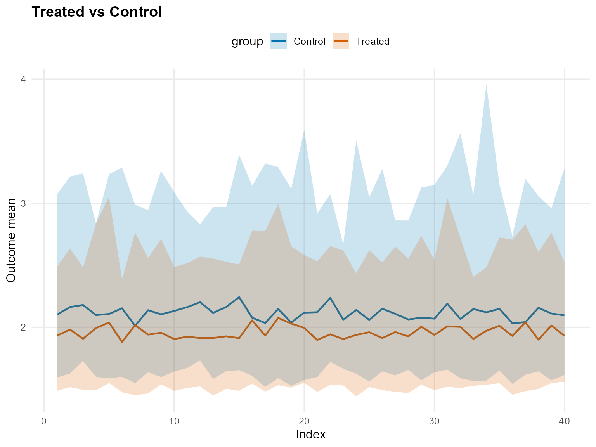
pred_q_gpd <- predict(fit_crp_gpd, x = x_eval, type = "quantile", p = 0.5, interval = "credible")
head(pred_q_gpd) ps estimate lower upper
[1,] NA 0.142 0.143 0.241
[2,] NA 0.192 0.164 0.244
[3,] NA 0.160 0.164 0.240
[4,] NA 0.196 0.164 0.265
[5,] NA 0.241 0.164 0.586
[6,] NA 0.146 0.144 0.233
plot(pred_q_gpd)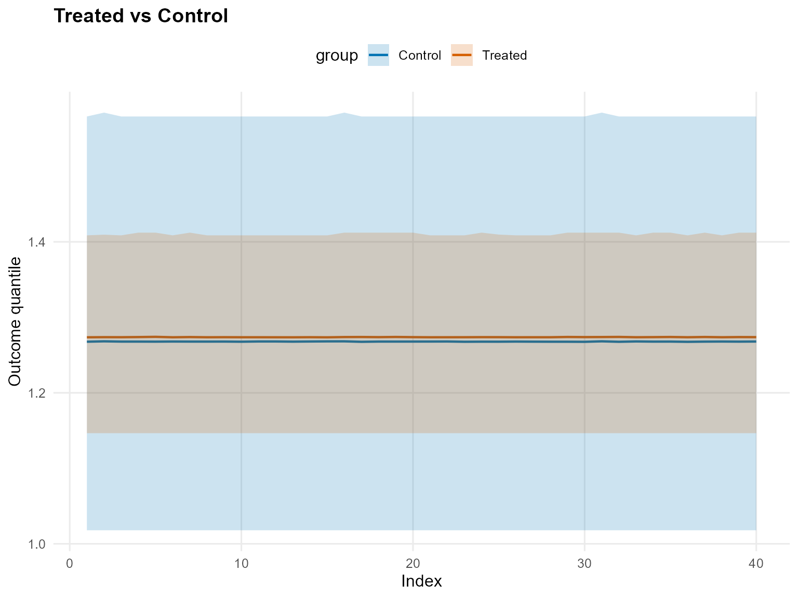
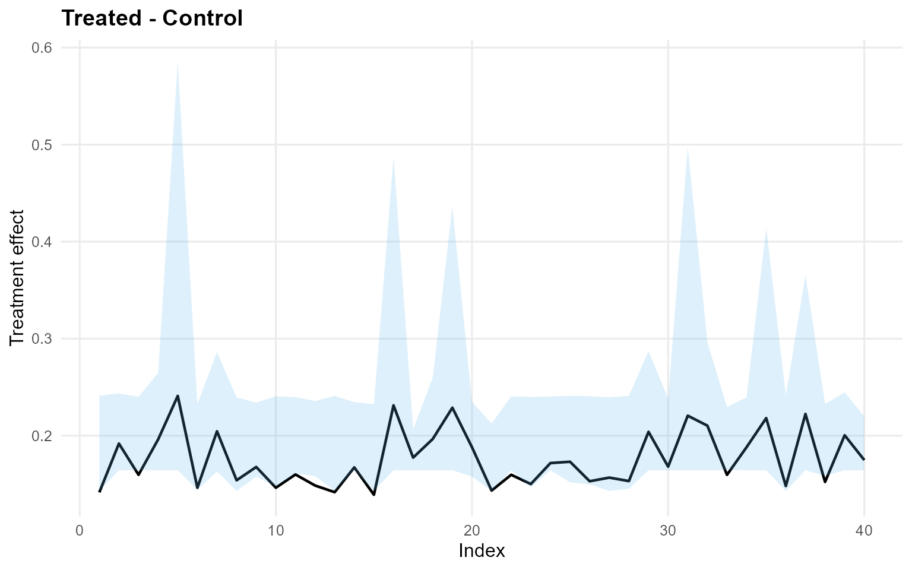
pred_d_gpd <- predict(fit_crp_gpd, x = x_eval, y = y_eval, type = "density", interval = "credible")
head(pred_d_gpd) y ps trt_estimate trt_lower trt_upper con_estimate con_lower con_upper
1 0.900 NA 1 0.4541 1.222 1 0.3452 0.5001
2 1.352 NA 1 0.3268 0.541 1 0.2501 0.4663
3 1.148 NA 1 0.4122 0.648 1 0.2950 0.4957
4 1.932 NA 1 0.2151 0.313 1 0.1630 0.3056
5 3.344 NA 1 0.0293 0.109 1 0.0179 0.0891
6 0.949 NA 1 0.4522 1.033 1 0.3415 0.4899
plot(pred_d_gpd)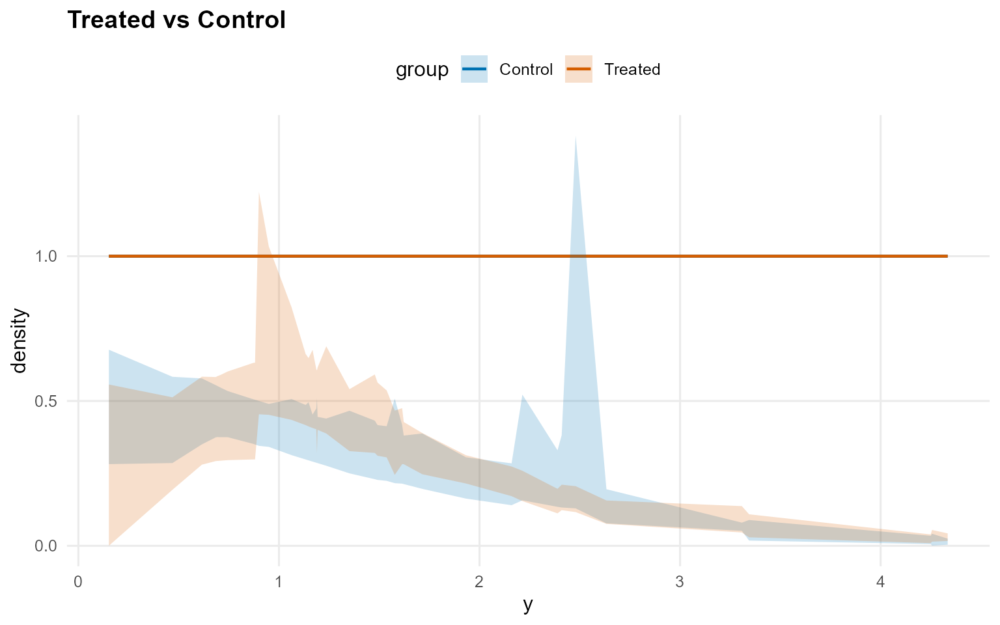
pred_surv_gpd <- predict(fit_crp_gpd, x = x_eval, y = y_eval, type = "survival", interval = "credible")
head(pred_surv_gpd) y ps trt_estimate trt_lower trt_upper con_estimate con_lower con_upper
1 0.900 NA 1 0.600 0.811 1 0.52052 0.660
2 1.352 NA 1 0.399 0.582 1 0.35666 0.482
3 1.148 NA 1 0.485 0.684 1 0.42468 0.552
4 1.932 NA 1 0.219 0.395 1 0.20246 0.297
5 3.344 NA 1 0.040 0.278 1 0.00463 0.107
6 0.949 NA 1 0.573 0.786 1 0.49872 0.637
plot(pred_surv_gpd)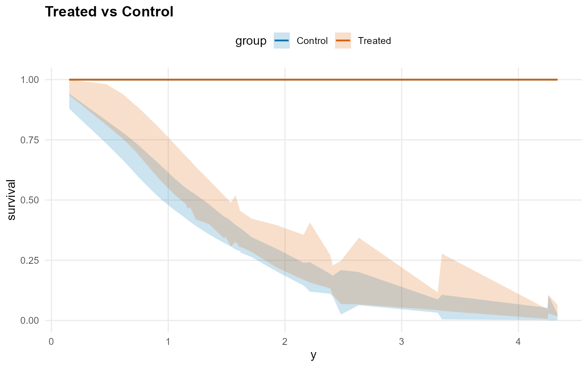
ate_gpd <- ate(fit_crp_gpd, newdata = x_eval, interval = "credible", nsim_mean = 150)
print(ate_gpd)ATE (Average Treatment Effect)
Prediction points: 40
Conditional (covariates): YES
Propensity score used: NO
Posterior mean draws: 150
Credible interval: credible (95%)
ATE estimates (treated - control):
id estimate lower upper
1 -0.038 -1.079 0.759
2 0.066 -1.028 0.992
3 -0.02 -1.014 0.82
4 0.119 -1.108 1.131
5 0.238 -1.36 1.691
6 -0.11 -1.132 0.893
... (34 more rows)
summary(ate_gpd)ATE Summary
==================================================
Prediction points: 40
Conditional: YES | PS used: NO
Posterior mean draws: 150
Interval: credible (95%)
Model specification:
Backend (trt/con): crp / crp
Kernel (trt/con): invgauss / invgauss
GPD tail (trt/con): YES / YES
ATE statistics:
Mean: 0.053 | Median: 0.03
Range: [-0.142, 0.282]
SD: 0.106
Credible interval width:
Mean: 2.041 | Median: 1.972
Range: [1.565, 3.05]
ate_plots_gpd <- plot(ate_gpd)
ate_plots_gpd$treatment_effect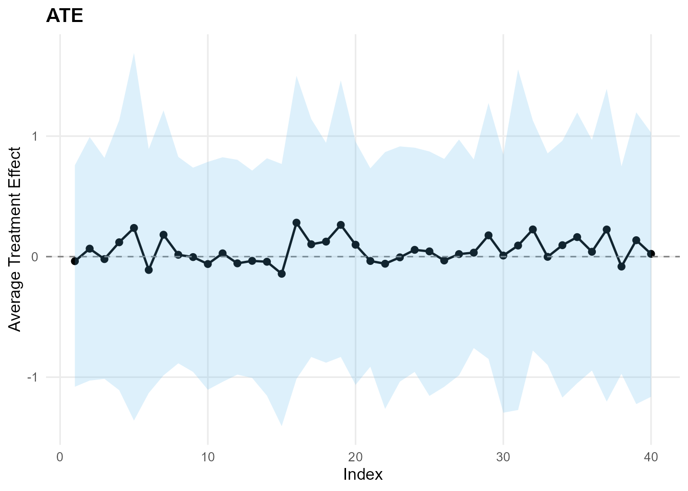
qte_gpd <- qte(fit_crp_gpd, probs = c(0.25, 0.5, 0.75), newdata = x_eval, interval = "credible")
print(qte_gpd)QTE (Quantile Treatment Effect)
Prediction points: 40
Quantile grid: 0.25, 0.5, 0.75
Conditional (covariates): YES
Propensity score used: NO
Credible interval: credible (95%)
QTE estimates (treated - control):
index id estimate lower upper
0.25 1 0.266 -0.004 0.488
0.25 2 0.267 -0.004 0.488
0.25 3 0.267 -0.004 0.488
0.25 4 0.267 -0.004 0.488
0.25 5 0.269 -0.004 0.488
0.25 6 0.266 -0.004 0.488
... (114 more rows)
summary(qte_gpd)QTE Summary
==================================================
Prediction points: 40 | Quantiles: 3
Quantile grid: 0.25, 0.5, 0.75
Conditional: YES | PS used: NO
Interval: credible (95%)
Model specification:
Backend (trt/con): crp / crp
Kernel (trt/con): invgauss / invgauss
GPD tail (trt/con): YES / YES
QTE by quantile:
quantile mean_qte median_qte min_qte max_qte sd_qte
0.25 0.267 0.267 0.266 0.269 0.001
0.5 0.176 0.168 0.139 0.241 0.029
0.75 0.101 0.064 -0.055 0.305 0.094
Credible interval width:
Mean: 0.638 | Median: 0.496
Range: [0.452, 1.815]
qte_plots_gpd <- plot(qte_gpd)
qte_plots_gpd$treatment_effect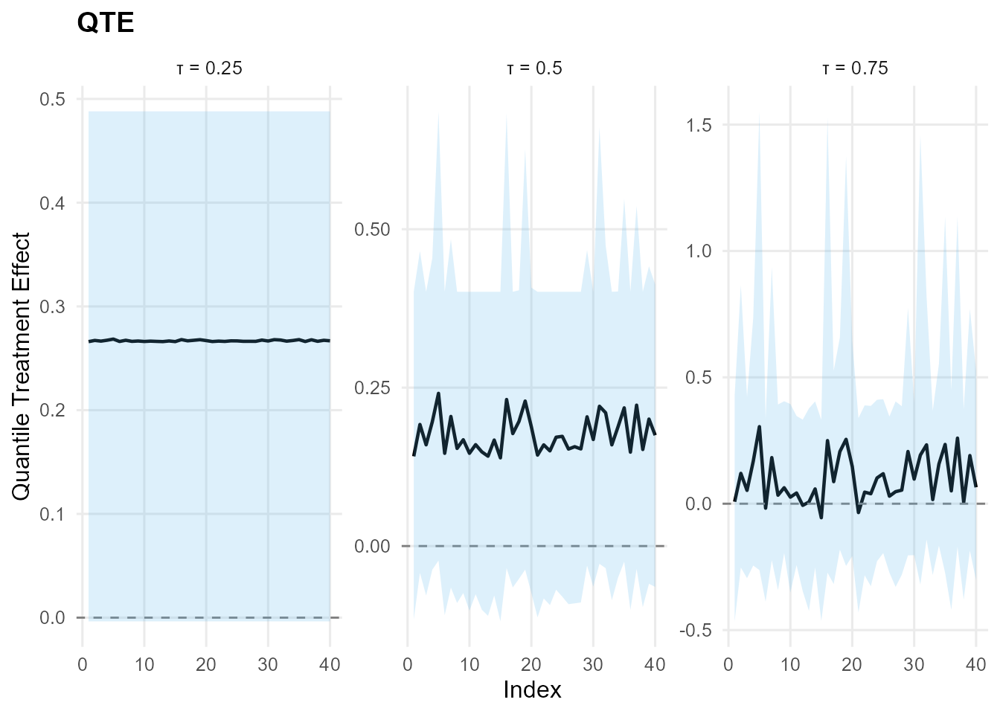
Model B: SB Bulk-only (Amoroso)
bundle_sb_bulk <- build_causal_bundle(
y = y,
T = T,
X = X,
kernel = "amoroso",
backend = "sb",
PS = FALSE,
GPD = FALSE,
components = 6,
mcmc_outcome = list(niter = 300, nburnin = 80, nchains = 1, thin = 1, seed = 4)
)
bundle_sb_bulkDPmixGPD causal bundle
PS model: disabled
Outcome (treated): backend = sb | kernel = amoroso
Outcome (control): backend = sb | kernel = amoroso
GPD tail (treated/control): FALSE / FALSE
components (treated/control): 6 / 6
Outcome PS included: FALSE
epsilon (treated/control): 0.025 / 0.025
n (control) = 232 | n (treated) = 268
fit_sb_bulk <- quiet_mcmc(run_mcmc_causal(bundle_sb_bulk))
summary(fit_sb_bulk)
-- Outcome fits --
[control]
MixGPD fit | backend: Stick-Breaking Process | kernel: Amoroso Distribution | GPD tail: FALSE
n = 232 | components = 6 | epsilon = 0.025
MCMC: niter=300, nburnin=80, thin=1, nchains=1
Fit
Use summary() for posterior summaries; plot() for diagnostics; predict() for predictions.
[treated]
MixGPD fit | backend: Stick-Breaking Process | kernel: Amoroso Distribution | GPD tail: FALSE
n = 268 | components = 6 | epsilon = 0.025
MCMC: niter=300, nburnin=80, thin=1, nchains=1
Fit
Use summary() for posterior summaries; plot() for diagnostics; predict() for predictions.
pred_mean_bulk <- predict(fit_sb_bulk, x = x_eval, type = "mean", interval = "credible", nsim_mean = 150)
head(pred_mean_bulk) ps estimate lower upper
[1,] NA 0.0937 0.324 -0.947
[2,] NA -0.6444 0.339 -2.051
[3,] NA -0.0533 0.431 -0.570
[4,] NA 0.2084 0.525 0.151
[5,] NA 1.0476 0.735 2.301
[6,] NA -0.0992 0.498 -0.647
plot(pred_mean_bulk)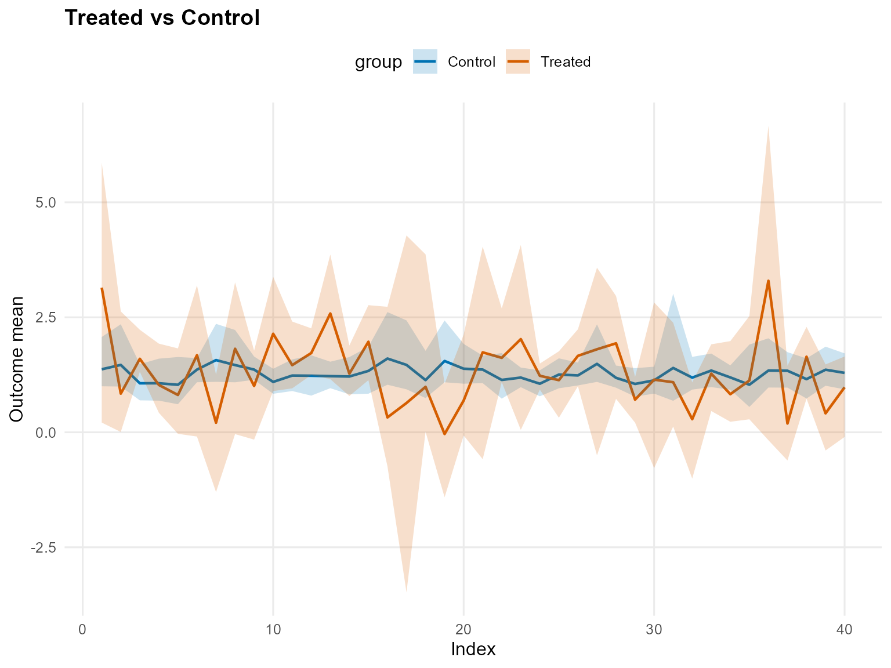
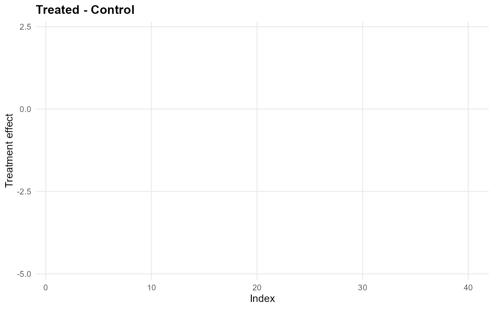
pred_q_bulk <- predict(fit_sb_bulk, x = x_eval, type = "quantile", p = 0.5, interval = "credible")
head(pred_q_bulk) ps estimate lower upper
[1,] NA 0.2311 0.4941 -0.330
[2,] NA -0.5963 0.1874 -2.134
[3,] NA -0.0189 0.3534 -0.493
[4,] NA -0.1363 0.1911 -0.677
[5,] NA -0.2440 -0.0423 -0.189
[6,] NA -0.0371 0.3594 -0.477
plot(pred_q_bulk)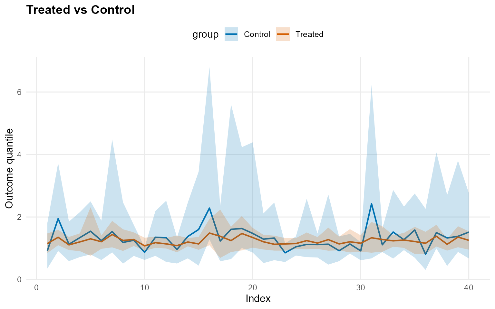
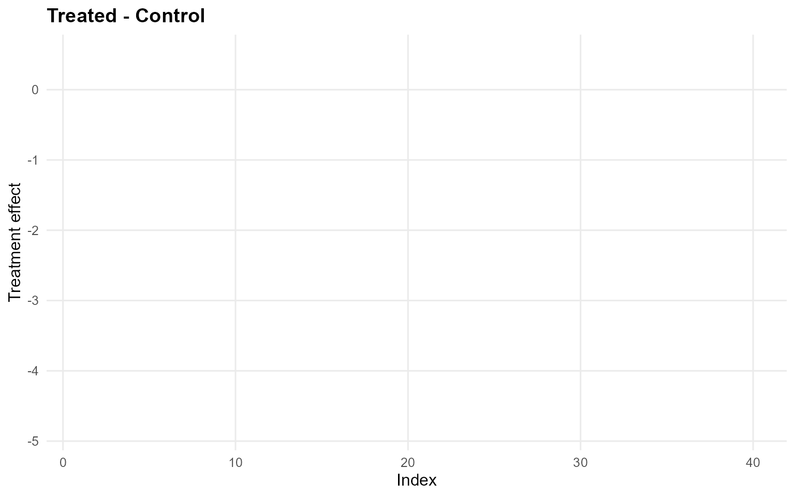
pred_d_bulk <- predict(fit_sb_bulk, x = x_eval, y = y_eval, type = "density", interval = "credible")
head(pred_d_bulk) y ps trt_estimate trt_lower trt_upper con_estimate con_lower con_upper
1 0.900 NA 1 0.3556 0.748 1 2.43e-01 0.698
2 1.352 NA 1 0.3010 0.478 1 6.09e-02 0.446
3 1.148 NA 1 0.3871 0.581 1 1.96e-01 0.506
4 1.932 NA 1 0.1144 0.282 1 3.13e-02 0.325
5 3.344 NA 1 0.0509 0.124 1 8.78e-06 0.164
6 0.949 NA 1 0.4297 0.641 1 2.28e-01 0.706
plot(pred_d_bulk)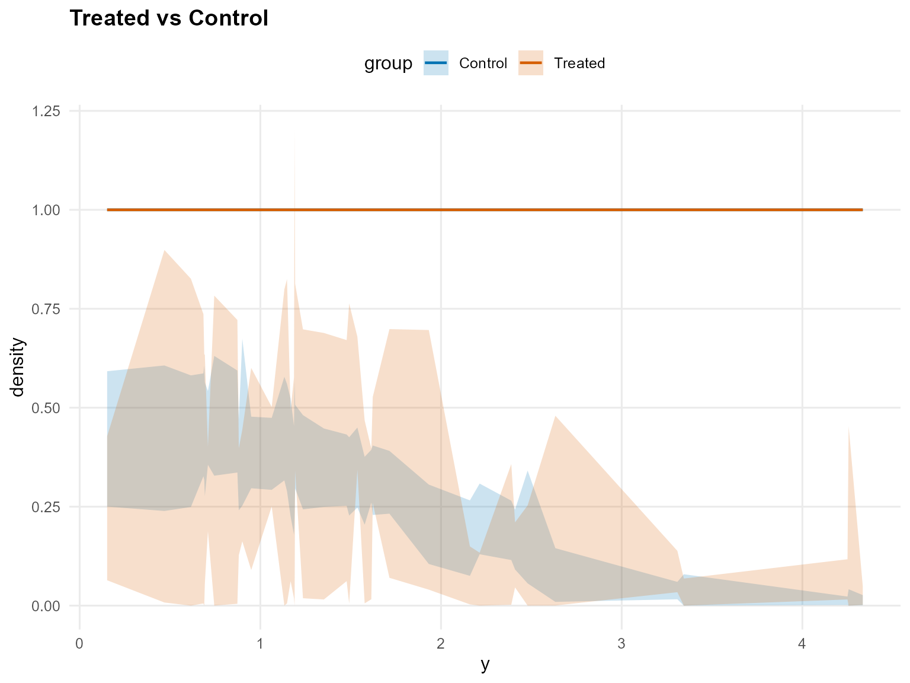
pred_surv_bulk <- predict(fit_sb_bulk, x = x_eval, y = y_eval, type = "survival", interval = "credible")
head(pred_surv_bulk) y ps trt_estimate trt_lower trt_upper con_estimate con_lower con_upper
1 0.900 NA 1 0.463 0.735 1 1.70e-01 0.734
2 1.352 NA 1 0.392 0.577 1 2.61e-01 0.676
3 1.148 NA 1 0.388 0.587 1 9.67e-02 0.626
4 1.932 NA 1 0.193 0.401 1 6.19e-03 0.530
5 3.344 NA 1 0.119 0.437 1 1.17e-06 0.410
6 0.949 NA 1 0.518 0.711 1 2.56e-01 0.712
plot(pred_surv_bulk)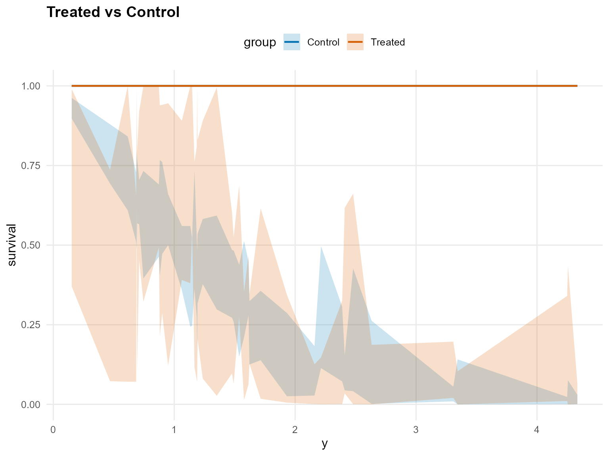
ate_bulk <- ate(fit_sb_bulk, newdata = x_eval, interval = "credible", nsim_mean = 150)
print(ate_bulk)ATE (Average Treatment Effect)
Prediction points: 40
Conditional (covariates): YES
Propensity score used: NO
Posterior mean draws: 150
Credible interval: credible (95%)
ATE estimates (treated - control):
id estimate lower upper
1 0.128 -1.351 1.01
2 -0.658 -2.478 0.767
3 -0.057 -1.018 0.719
4 0.251 -0.642 1.066
5 1.051 -0.84 3.155
6 -0.107 -1.077 0.741
... (34 more rows)
summary(ate_bulk)ATE Summary
==================================================
Prediction points: 40
Conditional: YES | PS used: NO
Posterior mean draws: 150
Interval: credible (95%)
Model specification:
Backend (trt/con): sb / sb
Kernel (trt/con): amoroso / amoroso
GPD tail (trt/con): NO / NO
ATE statistics:
Mean: 0.064 | Median: 0.085
Range: [-0.784, 1.051]
SD: 0.424
Credible interval width:
Mean: 2.698 | Median: 2.405
Range: [0.857, 6.454]
ate_plots_bulk <- plot(ate_bulk)
ate_plots_bulk$treatment_effect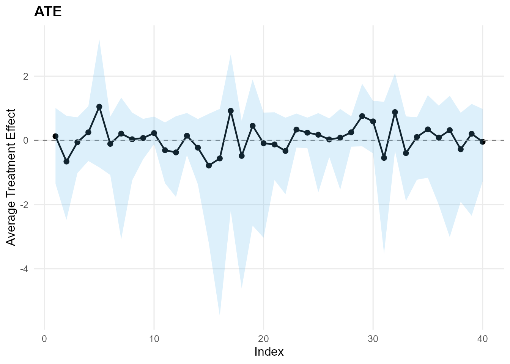
qte_bulk <- qte(fit_sb_bulk, probs = c(0.25, 0.5, 0.75), newdata = x_eval, interval = "credible")
print(qte_bulk)QTE (Quantile Treatment Effect)
Prediction points: 40
Quantile grid: 0.25, 0.5, 0.75
Conditional (covariates): YES
Propensity score used: NO
Credible interval: credible (95%)
QTE estimates (treated - control):
index id estimate lower upper
0.25 1 0.2 -0.196 0.666
0.25 2 0.156 -0.162 0.619
0.25 3 0.101 -0.129 0.357
0.25 4 0.168 -0.148 0.528
0.25 5 0.177 -0.338 0.68
0.25 6 0.168 -0.092 0.421
... (114 more rows)
summary(qte_bulk)QTE Summary
==================================================
Prediction points: 40 | Quantiles: 3
Quantile grid: 0.25, 0.5, 0.75
Conditional: YES | PS used: NO
Interval: credible (95%)
Model specification:
Backend (trt/con): sb / sb
Kernel (trt/con): amoroso / amoroso
GPD tail (trt/con): NO / NO
QTE by quantile:
quantile mean_qte median_qte min_qte max_qte sd_qte
0.25 0.154 0.161 -0.006 0.292 0.053
0.5 -0.092 -0.061 -1.088 0.354 0.293
0.75 -0.166 -0.081 -1.562 1.25 0.699
Credible interval width:
Mean: 2.369 | Median: 1.599
Range: [0.407, 11.741]
qte_plots_bulk <- plot(qte_bulk)
qte_plots_bulk$treatment_effect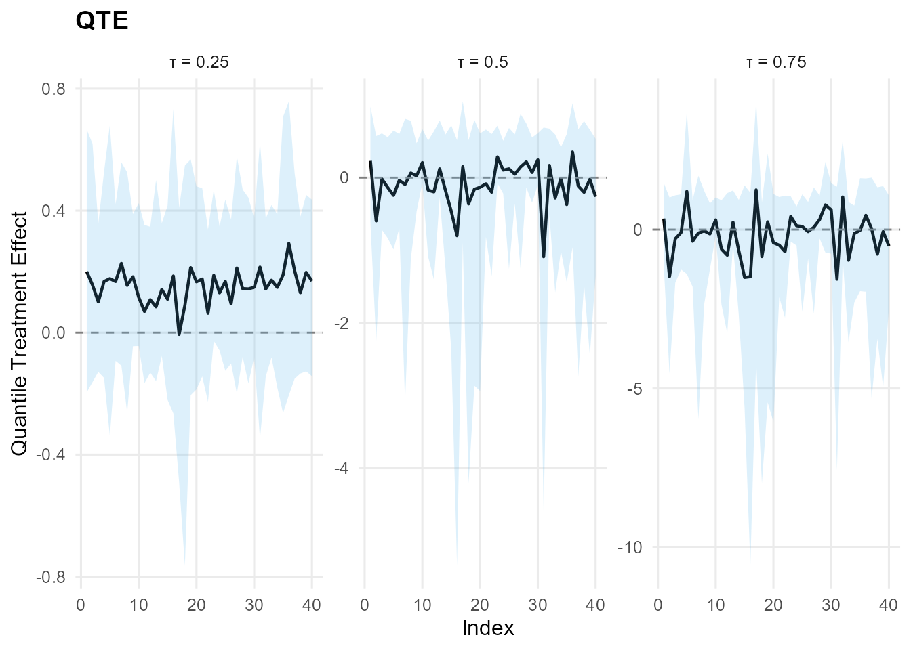